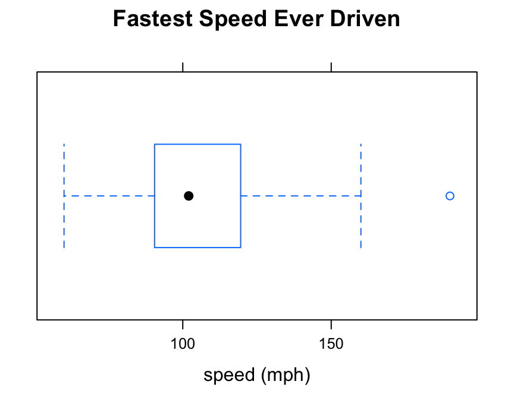
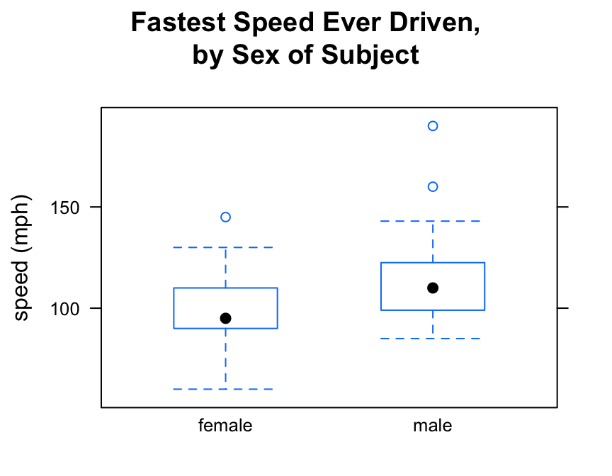
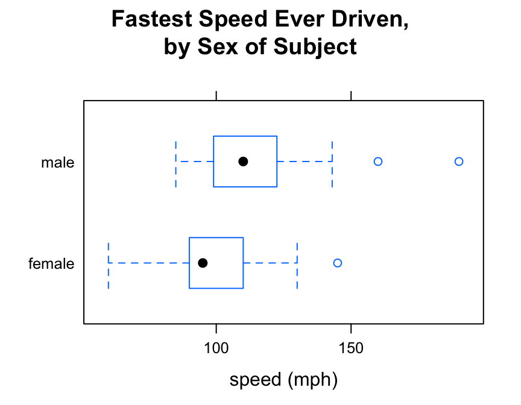
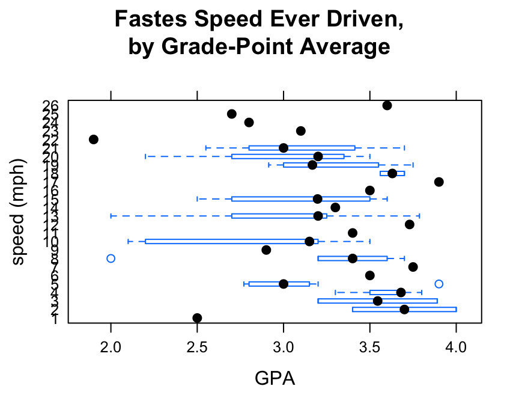
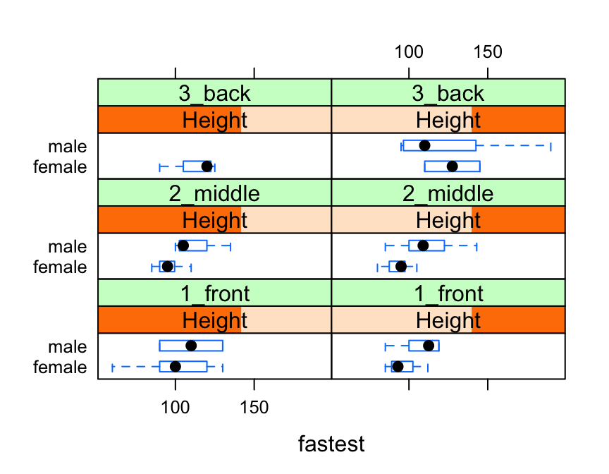

The function bwplot() makes box-and-whisker plots for numerical variables. It comes from the lattice package for statistical graphics, which is pre-installed with every distribution of R. Also, package tigerstats depends on lattice, so if you load tigerstats:
require(tigerstats)then lattice will be loaded as well.
For a box-and-whisker plot of the fastest speeds ever driven by students in the m111survey data frame, use the command:
bwplot(~fastest,data=m111survey,
xlab="speed (mph)",
main="Fastest Speed Ever Driven")
Note the use of:
xlab argument to label the horizontal axis, complete with units (miles per hour);main argument to provide a brief but descriptive title for the graph.Say you want to know:
Who tends to drive faster: the guys or the gals?
Then you are studying the relationship between the numerical variable fastest and the factor variable sex. bwplot() will break the fastest speeds up by sex and parallel box-and-whisker plots, if you run the following command:
bwplot(fastest~sex,data=m111survey,
ylab="speed (mph)",
main="Fastest Speed Ever Driven,\nby Sex of Subject")
Note the use of the “” to create a two-line title. This trick can come in handy if your title is long!
If you prefer your box-and-whisker plots to be horizontal, then you can reverse the order of the variables in the formula:
bwplot(sex~fastest,data=m111survey,
xlab="speed (mph)",
main="Fastest Speed Ever Driven,\nby Sex of Subject")
Box-and-Whisker plots are great for studying:
However, if you try to study the relationship between two numerical variables with bwplot(), you will get bizarre results.
For example, suppose you want to study the relationship between fastest speed ever driven (fastest) and the grade point average (GPA) of the subjects in m111survey:
bwplot(fastest~GPA,data=m111survey,
ylab="speed (mph)",
xbal="grade-point average",
main="Fastes Speed Ever Driven,\nby Grade-Point Average")
bwplot() expects at least one of the two variable in the formula to be numerical. When it is presented with two numerical variables it politely makes do—apparently converting fastest into a new factor variable—but the resulting graph doesn’t make any sense at all.
Use xyplot() (scatterplots) to study the relationship between two numerical variables.
You can incorporate additional variables into your analysis by facetting, i.e., producing a plot with separate panels for each of several subgroups of the observations, as determined by one or two other variables.
Suppose, for example, that we would like to study the relationship between sex and fastest speed ever driven, but to break the subjects down further into groups determined by their height and by where they prefer to sit in a classroom. The following code accomplishes this:
Height <- equal.count(m111survey$height, number = 2, overlap = 0.1)
bwplot(sex ~ fastest | Height * seat,
data = m111survey,
layout = c(2,3))
In the code above, the line:
Height <- equal.count(m111survey$height, number = 2, overlap = 0.1)prepares us to facet by height. The equal.count() function takes a numerical variable and divides its values into groups of approximately equal size. The number of the groups is specified by the number argument. In this case we are asking for two groups: “shorter” students and “taller” students. The groups are permitted to contain some members in common, and the allowed percentage intersection is specified by the overlap argument. (Setting overlap = 0 would result in completely disjoint groups.) The new variable Height is called a shingle, but you can think of it as a factor variable with two values: shorter and taller.
The formula fastest ~ sex | Height * seat facets by Height and seat. The variables by which you facet appear after a | bar, anf if you facet by two variables then you must separate them with a *. SinceHeight has two values and `seat has three values and \(2 \times 3 = 6\), we arrive at a plot with six panels.
The layout argument determines the number of rows and columns in our facet-ted plot. Setting layout to c(2,3) specified two columns and three rows. (Note that the columns are specified first!)
Box-and-whisker plots can be combined with other types of plots such as violin plots or individual-value plots. For these and other refinements, consult the Lattice Box-Whisker Plot Addin in RStudio.